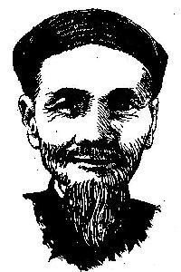

Chương Một

hắc tới Hồ Biểu Chánh, chúng ta nghĩ tới một tiểu thuyết gia theo khuynh hướng ''văn dĩ tải đạo'', lấy việc răn đời làm gốc. Nhưng đây cũng là kẻ viết theo khuynh hướng tâm lý ái tình, tuy nhiên đó là thứ tâm lý đóng khung trong lễ giáo, chết cứng và hóa thạch trong luân lý Khổng Mạnh, không thể vượt thoát ra một khung trời cao rộng gồm thiên hình vạn trạng nhân sinh quan phóng khoáng hơn và cởi mở hơn.

Hồ Biểu Chánh, bậc tiền bối của các cây bút Nam Kỳ chúng ta khởi nghiệp văn chuơng vào những năm cuối của thập niện 20 (của thế kỷ20). Đuờng lối viết lách của tiên sinh trước sao sau vậy, qua tới giữa thập niên 50 vẫn không thay đổi một mảy lông sợi tóc nào trong vấn đề nhân sinh quan, lý tưởng, trong cuộc sống phồn tạp và tiến bộ về văn hóa, tư tưởng, trong đường lối giáo dục của mọi tầng lớp hậu sinh của cụ.
Chúng ta phải tự hỏi, sau bao nhiêu vận nước nổi trôi, trải qua bao nhiêu thời đại, bao nhiêu thế hệ, vậy mà văn chương của Hồ Biểu Chánh vẫn còn được nhiều lớp độc giả hậu sinh chiếu cố? Có phải chăng tài hoa của cụ vượt dòng đào thải của thời gian? Có phải nó là tiếng đồng vọng lảnh lót và vang xa của cái thời đại mà cụ đã sống, đã cầm bút? Thật khó mà trả lời. Như chúng ta cũng thừa biết cái cấu trúc và cách dựng truyện của Hồ tiền bối cẩu thả, cách diễn tả của cụ thật bộc trực nếu không bảo là luông tuồng. Cụ ít khi viết văn, ít khi tả cảnh tả người chu đáo, thường là vài nét khái quát. Cũng như nhà văn Lê văn Trương, cụ hay thuyết lý, ưa trình bày cái nhân sinh quan của mình. Nhưng nhân sinh quan của cụ lâu lâu mới le lói một vài nét đặc thù của mình. Tuy nhiên, khi đọc tiểu thuyết của cụ, cớ sao người thưởng ngoạn bị cụ thôi miên hồi nào không hay. Cái chân tình, cái nhiệt thành của tình ý cụ lẫn cái nồng nàn của của bút pháp cụ quyến rũ người đọc một cách dị kỳ; cái thô vụng của cụ trở thành đậm đà tuyệt vời, cái bộc trực, cái xí xọn trong những lời đối thoại của từng nhân vật trở nên duyên dáng mặn mà khó tả.
Cái ngôn ngữ dí dỏm, chót chét trong văn phong của Hồ Biểu Chánh thường làm cho chúng ta bật cười một cách thống khoái, dù cụ có cằn nhằn chì chiết nhân tình thế thái đi nữa. Chúng ta cảm nhận ngay sự thành khẩn của cụ. Chúng ta vụt cảm thấy tận đáy sâu của ngôn ngữ cụ, tận cái thiết tha của tình ý cụ có một hấp lực kỳ đặc, không dễ gì tìm gặp ở bút pháp kẻ khác:
Thợ trời thiệt là khéo léo, hóa sanh muôn loài, không bỏ sót loài nào, đã sanh con voi to, mà còn sanh con muỗi nhỏ, đã sanh con cọp để giết người, mà còn sanh bò heo để nuôi người. Mà thợ trời cũng thiệt trớ trêu, mỗi loài lại sanh nhiều thứ, hình dáng, màu sắc tánh chất đều không giống nhau, sanh rắn độc mà cũng sanh rắn hiền, sanh hoa thơm mà cũng sanh hoa thúi. Sanh loài người, Tạo hóa cho có mặt, có tay, có chưn, có gan, có ruột như nhau, mà cắc cớ sơn cho nhiều màu da, người thì trắng, kẻ thì vàng, người thì đen, kẻ thì đỏ. Mà dầu đồng một màu da với nhau đi nữa, tâm tánh cũng bất đồng, kẻ hiền người dữ, kẻ ngay người gian, kẻ dại người khôn, kẻ sáng nguời tối. Có một điểm, loài người dù đen, đỏ, trắng, vàng, dầu dữ, hiền, khôn, dại, phần nhiều đều giống nhau. Ấy là thói say mê tiền bạc, say mê đến nỗi không kể tội lỗi, không biết thúi hôi, không sợ chê khen, không màng phải quấy, áp nhau bu lại mà giựt dành, nếu giựt cho được rồi chết cũng vui lòng, mà nếu giựt không được lại phải chết cũng không sợ.
(Tơ Hồng Vương Vấn, các trang 148, 149)
Viết theo văn dĩ tải đạo, bên Pháp đã có Delly, bên Anh đã có nữ sĩ Barbarra Cartland; họ ăn khách kinh khủng. Delly là bút hiệu của bà Jeanne Petitjean de La Rosière (sanh tại Avignon năm 1875, chết tại Versailles năm 1947) và ông Fréderic Petitjean de La Rosière (sanh tại Vannes năm 1875 chết tại Versailles năm 1949). Cả hai sáng tác lối 30 tác phẩm. Còn Barbarra Cartland viết lối 400 quyển tiểu thuyết. Nhưng đọc tác phẩm của họ, độc giả chỉ tìm được dăm ba tiếng đồng hồ để giải trí, rồi quên luôn những thú vị của mình đã trang trải trên những trang sách. Cặp Delly thường lấy tinh thần Bác Ái và Bao Dung của đạo Thiên Chúa làm nền tảng của câu chuyện, để đánh bóng thêm cho các nhân vật hiền lương mà Cộng Sản gọi là các nhân vật chánh diện thêm phần lộng lẫy. Nhưng đa số tác phẩm của Hồ Biểu Chánh thì không như thế. Ngoài chuyện tôn vinh quan niệm tích ác phùng ác, tích thiện phùng thiện, chúng còn có nhiều điều gì khác làm độc giả sống lại một đoạn đời quá khứ của mình hay giúp độc giả mường tượng cách sống của những lớp người thuộc những thế hệ trước thế hệ mình.
° ° °
''Tơ Hồng Vương Vấn'' là một cuốn tiểu thuyết thấm nhuần đạo Phật lấy chuyện luân hồi quả báo làm căn bản để triển khai cái sở trường văn dĩ tải đạo của Hồ Biểu Chánh. Vai chánh là cậu học sinh Phan Vĩnh Xuân sinh vào thời Nho mạt nơi chợ Giồng Ông Huê (Gò Công). Cậu là họ trò của ông Giáo Huân, một thầy đồ Nho khả kính. Cậu được sư phụ mình cho biết vận nước biến suy, dù phải chuyển qua Tây học để gọi là kiếm cơm nuôi mẹ, dù gì thì dù cũng phải giữ tấm lòng chính trực, liêm khiết. Nước mất nhà tan, ham chi hư danh quyền tước để hãnh diện với thiên hạ. Bạn học của cậu là cô Lý Thị Tư, được thầy ban cho cái biệt danh Cúc Hương, vốn là gái chánh trực, lại thông minh, xinh đẹp. Vĩnh Xuân và Cúc Hương yêu nhau, lén lút tư ước với nhau. Cả hai hẹn hò gặp nhau ở nhà chị Hai Tỷ, một phụ nữ Việt kết hôn với tài phú Sấm, người Trung Hoa. Ngờ đâu cha mẹ Cúc Hương tham giàu ép buộc Cúc Hương lấy chàng công tử bột xuất thân gia đình giàu có ở hương thôn. Cúc Hương quyết tâm bỏ sinh mệnh để giữ tròn đạo nghĩa. Truớc ngày vu quy, cô giao 50 đồng bạc cho Hai Tỷ, bảo rằng với số tiền này, cộng với tiền trợ cấp của chánh phủ, Vĩnh Xuân có thể ăn học trong vòng 3 năm cho đến khi thành tài. Cô cũng gửi tấm lụa có viết chữ nho ''Xả Thân Nhi Thủ Nghĩa'' (bỏ thân để giữ tròn đạo nghĩa) cho chàng để chàng nhìn bút tích mà nhớ tới cô. Cô cũng không quên gửi một xấp lãnh và một xấp xuyến cho bà Hương văn Thanh, mẹ của Vĩnh Xuân may quần áo, gọi là quà tặng của cô dâu...hụt. Cô dặn Hai Tỷ phải khuyên Vĩnh Xuân chí thú ăn học, để cô được toại nguyện. Rồi cô uống nha phiến pha trộn với dấm thanh để tự tử.
Vĩnh Xuân tuy đau khổ nhưng nhờ lời khuyên của ông Giáo Huân và Hai Tỷ nên theo lời dặn của Cúc Hương chí thú ăn học, đậu bằng Thành Chung, rồi thi vô ngành ký lục cũng đậu luôn. Chàng về nhà vào ngày 25 tháng chạp tức là ngày 23 tháng Janvier. Bữa sau chàng đi viếng mộ Cúc Hương thì vào quá 12 giờ khuya, chàng nằm chiêm bao thấy Cúc Hương từ giã chàng đi đầu thai và cho chàng biết kiếp sau nàng sẽ được tái ngộ cùng chàng, để kết hôn với chàng.
Vĩnh Xuân được thuyên chuyển qua Mỹ Tho làm việc ở Tòa Bố(tức là Tòa Hành Chánh về sau). Chàng kết thân với ông Kinh Lịch Lương, đuợc ông dạy đàn, dạy làm thơ để rồi cả hai trở thành đôi bạn vong niên thân thiết. Chàng từng thố lộ với bà Kinh như sau:
-- Thưa bà, vì nghèo cực nên cực chẳng đã tôi phải theo tân học đặng làm việc lãnh lương nuôi mẹ. Tôi muốn ngồi yên trong một góc bàn mà biên chép, chờ cuối tháng lãnh lương ăn vậy. Tôi thưa thiệt với ông bà, tôi không ham danh lợi, ham lợi, nhứt là danh không chánh đáng và thứ lợi không hạp nữa. (trang 187)
Bà Kinh rất thuơng mến Vĩnh Xuân cố tình làm mai cho chàng cưới cô Cẩm Nhung, con gái út của Bà Chủ Thiệu ở Chợ Cũ (bên kia Cầu Quây). Vi sợ mẹ buồn nên chàng phải cưới Cẩm Nhung, một cô gái xuất thân từ gia đình giàu có, lại có bóng sắc chói chang. Đây là một cuộc hôn nhân miễn cưỡng vì chàng không sao quên được Cúc Hương. Còn Cẩm Nhung không quen làm vợ và làm dâu trong một gia đnh thanh bạch mà cách ăn ở sinh sống thiếu tiện nghi, nên cô đâm ra thất vọng. Lại nữa, gặp ông chồng thiếu nồng nàn, tình tứ nên cô thường về ở bên nhà mẹ, rồi sanh tâm ngoại tình, có thai với tình nhân. Vĩnh Xuân không muốn làm cho gia đình bên vợ mang tiếng xấu vì dầu sao Cẩm Nhung cũng đã sanh cho chàng một đứa con trai. Cho nên chàng khuyên Ba Khai, người anh trưỏng của vợ buộc Cẩm Nhung đút đơn vô tòa án xin ly dị, như thế cái tội ngoại tình của nàng sẽ được giấu nhẹm. Bà Chủ Thiệu và Ba Khai cảm cái đức quân tử của chàng nên âm thầm giúp đỡ chàng, vẫn xem chàng như con rể trong gia đình họ. Chàng vẫn gọi bà Chủ Thiệu bằng má trước sao sau vậy. Bà Chủ Thiệu và Ba Khai âm thầm giúp đỡ cách sống cho chàng được tiện nghi. Họ trừng phạt Cẩm Nhung, cấm không cho nàng ra khỏi nhà, cấm không cho nàng léo hánh lên nhà trên (tức là trung đường), cấm không cho nàng mặc quần hàng áo lụa, phải mặc vải bô thô xấu.
Nhờ giỏi tiếng Pháp, tại Tòa Bố chỉ một thời gian ngắn Vĩnh Xuân làm thông ngôn cho quan Phó Tham Biện người Pháp, rồi làm thông ngôn cho quan Chánh Tham Biện (về sau gọi là Tỉnh Trưởng) cũng người Pháp. Rồi chàng thi đậu trong cuộc thi tuyển tri huyện. Trong bữa tiệc ăn mừng Vĩnh Xuân thành công trên đường hoạn lộ do bà Chủ Thiệu khoản đãi, Vĩnh Xuân xin bà và Ba Khai rộng dung hình phạt cho Cẩm Nhung. Chàng nhận lỗi rằng chính cái cách cư xử dung túng nhưng thiếu nhiệt tình của mình đối với vợ đã xô đẩy Cẩm Nhung vào con đường quấy.
Sau đó ít lâu, Vĩnh Xuân được vinh thăng tri phủ phải qua Cần Thơ nhận nhiệm sở mới. Mọi việc sắp đặt chỗ ở mới cho quan huyện Vĩnh Xuân do chính Ba Khai đảm nhiệm. Trước khi qau Cần Thơ, bà Hương Văn Thanh và Vĩnh Tân (con của Vĩnh Xuân)có đến Chợ Cũ từ giã bà Chủ Thiệu. Tại đây, Cẩm Nhung ra mặt nhìn con của mình. Thấy nàng dâu cũ của mình hương phai phấn lợt vì bao năm bị gia pháp trừng phạt lại thấy cô bi lụy thảm thiết, bà Hương Văn Thanh an ủi Cẩm Nhung hứa sẽ dạy dỗ Vĩnh Tân không quên công sinh thành của mẹ và hứa hễ có dịp là cho Vĩnh Tân về Chợ Cũ thăm mẹ và bên ngoại.
Năm đó quan Phủ Vĩnh Xuân lúc đó đã 40 tuổi, trong buổi nhàn du tình cờ ông gặp cô Hưởng, con gái ông Hương Nhì Tồn từ hình dung tiếng nói đến dáng đi cử chỉ đều giống hệt Cúc Hương. Ông dò la biết được cô Hưởng sanh vào lối 3 giờ khuya, đúng là hai giờ sau lúc nửa đêm Cúc Hương từ giã ông để đi đầu thai. Tin chắc cô Hưởng là hậu kiếp của Cúc Hương nên ông xin cưới cô. Và muốn cho chắc ăn điều nhận nhận xét của mình, sau đám cưới chàng đưa vợ về quê hương của mình để xem nàng có nhớ được gì không? Quả nhiên vừa tới Chợ Giồng thì người vợ trẻ của quan Phủ Vĩnh Xuân nhớ hết những người thân trong quá khứ trong đó có vợ chồng ông Giáo Huân và chị Hai Tỷ.
Trong truyện dài ''Tơ Hồng Vương Vấn'', người xấu (mà bọn Cộng Sản gọi là nhân vật phản diện) chỉ có vợ chồng Hai Mỹ (song thân của Cúc Hương). Họ vô tình giết con gái mình vì họ chuộng thói tham phú phụ bần. Còn ngoài ra người tốt thì đông đảo hùng hậu. Ngoài mẹ con của bà Hương Văn Thanh, còn có Cúc Hương, vợ chồng ông Kinh Lịch Lương, bà Chủ Thiệu, Ba Khai, bà Giáo Huân, chị Hai Tỷ đều là những kẻ mến đức chuộng tài. Họ mở tấm lòng hào hiệp đối đãi với Vĩnh Xuân. Còn ông Giáo Huân thì ra công rèn luyện đức dục cho Vĩnh Xuân, vun quén thiên lương và đức độ của chàng được mãi mãi sáng rực rỡ như gương. Cẩm Nhung cũng không phải là người xấu. Nếu cô sống vào thập niên 60 trở về sau thì cô sẽ đuợc người đời không cho cô là tội nhân mà là một nạn nhân của nền luân lý cổ quá cay nghiệt khắc khe. Luân lý ấy dìm cô vào mặc cảm tội lỗi làm cô nghĩ rằng mình có tội nặng, chứ thật ra chẳng những tội cô quá nhẹ mà cô còn đáng cho chúng ta ai hoài thương xót. Rất may, dù bị ảnh hưởng luân lý của Nho Giáo, nhưng Vĩnh Xuân cảm thông được nỗi éo le của vợ nên xin mẹ vợ và anh vợ nương tay trừng phạt cho vợ.
Chuyện duyên nợ theo vòng luân hồi quả báo không phải chỉ có Hồ Biểu Chánh tiên sinh là kẻ tiền phong xướng ra trong văn chương. Vào thuở tiền chiến, trong hai quyển ''Kho Vàng Sầm Sơn'' và ''Đồng Tiền Vạn Lịch'', nhà văn Tchya đã viết cuộc tình của Nguyễn Anh Tề, con trai của Nguyễn Hữu Chỉnh, và Quận Chúa Võ An Trinh, con gái Võ văn Nhậm vào thời Tây Sơn dựng nghiệp. Cả hai trắc trở việc hôn nhân nên cùng sống thác với tình, hẹn kiếp sau sẽ thực hành cuộc tình duyên dang dở. Câu chuyện đó được gói ghém trong quyển ''Kho Vàng Sầm Sơn''. Khi qua quyển ''Đồng Tiền Vạn Lich'' thì Nguyễn Anh Tế thác sinh vao dòng dõi Nguyễn Hữu Chỉnh trở thành Nguyễn Hữu Tề, còn Quận Chúa Võ An Trinh đầu thai vào dòng họ Võ Văn Nhậm trở thành Võ Ái Trinh. Sau bao phen xung đột để chiếm đồng tiền Vạn Lịch mà họ cho rằng đó là cái chìa khóa mở kho vàng mà Nguyễn Anh Tề và Võ An Trinh chôn giấu ở Sầm Sơn. Nhưng họ chỉ tổ hoài công thôi. Họ không tìm được kho tàng mà tìm được dấu vết tình yêu giữa đôi bên với nhau từ thuở tiền kiếp.
Nữ sĩ ngươi Anh Elizabeth Goudge có viết trong quyển ''Tiếng Gọi Của Quá Khứ'' (''L'Appel du Passé'') cặp tình nhân dang dở thời tiền kiếp chết đi. Qua kiếp tái sinh chàng vẽ bức họa phong cảnh lâu đài mà cả hai đã từng sống. Nhờ vậy, hậu thân của nàng được phục hồi ký ức, nhớ lại cố nhân và cuộc sống xa xưa bên kia nẻo luân hồi để tìm đến chàng. Tin hay không tin thuyết luân hồi và thuyết thác sinh, nhưng nó cũng đã đóng góp cho văn nghiệp nữ sĩ Elizabeth Goudge một tác phẩm diễm lệ và cực kỳ thơ mộng. Nó đã giúp cho Tchya và Hồ Biểu Chánh thuyết phục một số độc giả suy nghĩ về cái thần bí của bánh xe luân hồi di chuyển không ngừng nghỉ trên vạn pháp và trên các hiện hữu.
° ° °
Hồ Biểu Chánh viết tiểu thuyết theo lối thuyết thoại (la narration). Như đã nói, cụ kể chuyện tuồn tuột, ngon ơ, ít khi dùng óc quan sát để tả cảnh vật, tả ngoại hình các nhân vật. Thường là những nét phác thảo sơ sài, khái quát.
Đây là cảnh đi đò dọc từ chợ Mỹ Tho qua chợ Giồng Ông Huê (thuộc tỉnh Gò Công):
Đò lui. Hành khách chỉ có bốn người nên rộng rãi ai cũng nằm được. Gặp nước xuôi lại có gió xuôi bởi vậy ra khỏi vàm rồi trạo phu trương buồm mà chạy, khỏi chèo. Mặt trời vừa trịch bóng, đò đã tới Vàm Giồng, gặp nước lớn đi vô vàm, đi xuôi nữa. Chủ đò đoán trước bữa nay về tới chợ Giồng sớm lắm, chừng nửa buổi chiều.
Vĩnh Xuân nghe nói vậy bèn ngồi dậy. Bây giờ đò vô rạch Vàm Giồng, hai bên cây cối tập rạp, án gió không bọc buồm lên được. Trạo phu hạ buồm rồi gay chèo mà chèo, nhờ nước xuôi nên ghe đi lẹ lắm. (trang 93)
Đây là cảnh quan phủ Vĩnh Xuân đi chơi chợ Bình Thủy tình cờ gặp cô Hưởng (hậu thân của Cúc Hương) nên ông heo dõi cô thiếu nữ kia đến cầu Rạch Cam:
... Vĩnh Xuân vẫn theo coi nhà cô ở chỗ nào. Đi chừng một trăm thước thì tới một thớt vườn không lớn nhưng sạch sẽ dựa lộ, có hàng rào bằng cây trà, trong sân có trồng hoa, rồi sau sân ấy có một nhà lá ba căn xông, vách ván, cửa ván, nền cao, hai bên nhà dừa với mận trồng sum suê, còn phía sau thì cau chuối tịch mịch. (trang 406)
Những bối cảnh do tác giả dựng lên để lót nền cho cuộc tình sử giữa Vĩnh Xuân vá Cúc Hương cũng không được miêu tả chu đáo. Vẫn là nghệ thuật thuyết thoại theo lối văn chương trong các quyển địa dư, trong các quyển địa phương chí. Nhưng chính ở những dòng kể chuyện ấy, độc giả cũng có thể mường tượng những nét tạo hình ẩn trong cuộc bút trình của tác giả:
Rạch Vàm Giồng bên Cửa Tiểu, nhờ có kinh đào đi ngang qua chợ Giồng rồi thông với rạch Gò Công bên sông Bạo Ngược là sông Vàm Cỏ, bởi vậy địa thế giúp cho chợ Giồng biến thành một thị trường lúa gạo trong hạt Gò Công. Ở đây có nhiều người cất vựa trử lúa, trử gạo, từ ngoài đồng đem vô bán. Họ mua để bán lại cho những lúa gạo chở lên Chợ Lớn mà bán ngay cho mấy nhà máy hoặc cho mấy tàu khậu làm trung gian cho nhà máy.
Hồi đó, hễ đến mùa gặt lúa, thì chợ Giồng phồn thạnh lắm. Dưới kinh, ghe mua lúa đậu chật. Còn trên bờ, từ nửa buổi chiều cho tới canh một, ở ngoài đồng họ gánh gạo vô bán kể đến máy trăm người, mỗi xóm đi chung một tốp, lại có năm ba xe bò chở lúa đem vô nữa. Chợ lúa gạo nầy buổi chiều nhóm tại dốc cầu sắt. Đờn bà con gái dọn ngồi bên đường mà bán dầu lửa, nước mắm, hộp quẹt, trà tàu, cá khô, bánh trái, thúng rỗ, nón guốc, nia đệm, nghĩa là bán đủ thứ cần dùng ở chốn thôn quê. (trang 37)
Hồ Biểu Chánh ưa bàn luận nhân tình thế thái theo một bình diện phẳng, tức là dựa vào cái chung chung của cuộc sống rồi triển khai rộng ra, ít khi đào sâu vào những gì mà cụ tư duy.
Tự căn bản, ''Tơ Hồng Vương Ván'' chỉ là một pho diễm tình trà trộn bóng dáng tâm linh huyền hoặc. Cái giá trị văn chương của nó chẳng có bao nhiêu, nhưng bối cảnh lịch sử của nó làm chúng ta phải lưu ý. Đó là giai đoạn giao thoa giữa nền Nho mạt và văn hóa Tây phương sau khi Pháp thuộc-địa-hóa đất Nam Kỳ và đặt nền Bảo Hộ lên Bắc Kỳ và Trung Kỳ.
Hồ Biêu Chánh là con bậc thâm nho. Lúc nhỏ, cụ theo Nho học, nhưng sau đó cụ chuyển qua Tây học, rồi ra làm việc cho chánh phủ Thuộc địa. Do đó, cụ bị các bậc cựu nho eo sèo mai mỉa. Chính cụ cũng áy náy và ngờ ngợ hành xử và cuộc mưu sinh của mình có điều gì không ổn. Chính ở quyển ''Tơ Hồng Vương Vấn'' cụ mới có thể giải bày tâm sự và những điều khoắc khoải của mình:
Thế cuộc vần xoay, hết suy tới thạnh, nhơn quần tấn hóa, đổi cựu ra tân. Đó là định luật dĩ nhiên, dầu muốn dầu không ai ai cũng phải chịu, không làm sao sửa được.
Nhớ lại mà coi sau khi đánh phá đại đồn Chí Hòa rồi, binh đội Pháp lần lần xâm chiếm tất cả sáu tỉnh của đất Gia Định. Từ hạng nông phu cho tới học thức thảy đều tức tửi mà quay đầu về Phú Xuân, thì triều đình dường như im lìm bỏ xụi; còn chong mắt ngó vào đám anh hùng nghĩa sĩ thì các cụ Trương Công Định, Nguyễn Trung Trực, Thiên Hộ Dương, Thủ Khoa Huân lần lượt thất bại tiêu tan.
Đứng trước ngả ba đường như vậy đó, phải đi ngả nào? Nếu cương quyết giữ
nền nếp cũ thì lấy chi mà nương náu, còn nếu đổi thái độ cho xuôi dòng thì lỗi với tổ tiên, mà thẹn cùng cây cỏ. Trong lúc dân trí phân vân như vậy, nhà cầm quyền Php khôn ngoan, nên chăm lo gây thiện cảm với nhân dân. Người ta biết thâu phục đất đai thì dễ, nhứt là gặp xứ không có binh đội tổ chức hoàn bị; còn như thâu phục nhơn tâm là điều khó khăn, phải hay đổi văn hóa, phải un đúc tâm hồn, mấy viẹc đó phải dầy công phu, phải nhiều thế kỷ thì mới làm nên được. (các trang 7, 8)
Xin nghe cuộc đối đáp giữa quan Phủ Vĩnh Xuân và thầy Cai Tổng, tại một khách sạn tỉnh Cần Thơ:
--...Tôi nghe nói thuở xưa quan thanh liêm đi phó nhậm chỉ có một cây đờn cầm với một con hạc thế mà tới đâu cũng bố đức cho dân lạc nghiệp an cư. Đời nay không có hạc thì quan lớn đi phó nhậm với một cây đờn, tôi tưởng cũng đủ rưới âm đức cho nhơn dân xứ Cần Thơ nhuần gội.
-- Thầy Cai đem tôi mà sánh với quan đời xưa sao được. Nước đã mất chủ quyền, dân đã thành tôi mọi. Tôi làm quan, song cũng là tay sai của người ta, lịnh trên dạy phải làm sao tôi phải làm như vậy. Tôi cũng như anh đầu bếp nấu canh. Chủ nhà đưa mắm muối biểu nêm cho thiệt mặn. Tôi tráo trở làm cho lạt bớt đặng để ăn. Đó cũng đã đủ nát trí khôn rồi. Khỏi bị quấy rầy, bị quở phạt ấy là may, mong gì làm cho ngươi ăn khen canh ngon ngọt được. (trang 393)
Cúc Hương và Vĩnh Xuân tuy học theo đàng cựu dở dang nhưng cũng đã từng học các quyển ''Minh Tâm Bửu Giám'', Ấu Học Tầm Nguyên'', ''Tứ Thơ Thể Chú'', ''Đại Học'',
''Trung Dung'', ''Luận Ngữ''... Vĩnh Xuân có thể giải nghĩa rành rọt sách Mạnh Tử cho Cúc Hương nghe. Nhưng vì nhà nghèo, nếu đeo đuổi theo cái học của thời mạt điệp của ngành Nho học thì làm sao chàng kiếm tiền nuôi mẹ khi mẹ già yếu? Chàng chuyển sang Tân học. Vào thuở đó tại tỉnh Gò Công tình trạng Tân học ở bậc tiểu học như sau:
Trong khoảng đó, người ta nhận thấy tại Châu Thành Gò Công nhà nước có một trường sơ đẳng học, gồm năm lớp có một quan Đốc học người Pháp với năm giáo viên người Việt. Từ lớp nhứt đến lớp tư thì dạy Pháp văn nhiều hơn Việt văn, còn lớp năm là lớp chót thì giao cho một thầy nho biết chữ Quốc ngữ dạy trẻ đồng ấu học vần xuôi, vần ngược, rồi tập đọc, tập viêt quốc văn.
Học trò cả thảy chừng một trăm rưỡi, lớp chót được lối năm mươi trò, còn mấy lớp trên chung vài ba chục, tới lớp nhứt chỉ còn mười đến mười lăm là nhiều. Lại học trò toàn là con trai, chớ không có con gái, cha mẹ ở tại chợ, hoặc trong mấy xóm làng xung quanh cách chợ lối vài ba ngàn thước.
Muốn lấy thêm học trò đông, lại cũng muốn Pháp ngữ được thông dụng trong mấy làng xa, Tham Biện mới mở tại bốn chợ trong bốn tổng, mỗi chợ một làng dạy Pháp văn gọi là ''Trường tổng'' gồm hai lớp: lớp nhỏ dạy cho biết đọc, biết viết chữ quốc ngữ, rồi lên lớp lớn bắt đầu dạy Pháp văn. Trong lúc nói đây, trong hạt có bốn trường tổng đặt tại bốn chợ: Rạch Giá (Đồng Sơn), Giồng Ông Huê (Vĩnh Lợi), Cửa Khâu (Tăng Hòa) và chợ Tổng Châu (Tân Niên Tây)...(các trang 10, 11)
°
Trong sự nghiệp văn chương nguy nga đồ sộ của Hồ Biểu Chánh, bút giả HTA chọn quyển ''Tơ Hồng Vương Vấn'' thay vi những quyển tiểu thuyết nổi tiếng lừng lẫy khác của cụ như ''Nặng Gánh Cang Thường'' (phóng tác theo vở bi kịch ''Le Cid'' của Corneille), ''Ngọn Cỏ Gió Đùa'' (phóng tác theo quyển ''Le Misérables'' của Victor Hugo), (phóng tác theo quyển ''Chút Phận Linh Đinh'' của Hector Malot),''Cay Đắng Mùi Đời'' (phóng tác theo cuốn ''Sans Famille'' cũng của Hector Malot), ''Kẻ Thất Chí'' (phóng tác theo quyển (''Crime et Châtiment'' của Dostoievski)... Bút giả nhận thấy ''Tơ Hồng Vương Vấn'' ngoài chuyện gay cấn éo le đã từng thôi miên và mê hoặc độc giả mà còn phản ảnh được một giai đoạn lịch sử, một chuyển biến gần như lột xác về phương diện văn hóa.
Tác giả đã xắn ra một mẩu đời của mình để đưa vào tác phẩm. Tác giả lại còn xắn tim óc của mình để rải vào tác phẩm. Cái văn dĩ tải đạo của cụ có thể đã lỗi thời. Nhưng người thưởng thức có đầu óc sáng suốt, cótinh thần tìm hiểu chuyện quá vãng theo kiểu ''ôn cố nhi tri tân'' sẽ chấp nhận mọi cách giải bày tâm sự, hoài bảo, khuynh hướng, lý tưởng của cụ. Ngoài ra song song với tấm lòng thành khẩn của cụ, người ta còn bắt gặp cái tinh thần tồn cổ một cách khả ái của cụ, chứ họ không kinh hãi cái nệ cổ đi đến mức cuồng tính một cách ngoan cố của các bậc hủ nho khác.
Trong quyển ''Le Pavillon des Femmes'' (''Ngôi Nhà Lầu Phụ Nữ''), nữ sĩ Pearl S. Buck có bàn về quyển ''Kim Bình Mai''. Đại ý rằng nếu ai thích tìm thú nhục cảm thì ''Kim Bình Mai'' là quyển dâm thư đúng nghĩa. Nhưng nếu ai muốn tìm xã hội tham nhũng thối nát dưới triều đại Nam Tống do Hoàng Đế Tống Cao Tôn trị vì thì quyển truờng giang tiểu thuyết này cũng sẽ đáp ứng nhu cầu tìm hiểu của đương sự. Như thế, tùy theo mục đích thưởng ngoạn của kẻ đọc sách. Riêng về quyển ''Tơ Hồng Vương Vấn'' của Hồ Biểu Chánh, nếu ai muốn tìm thú giải trí theo thị hiếu bình dân thì đây là quyển diễm tình hấp dẫn. Còn nếu ai muốn biết xã hội Việt Nam vào buổi giao thời thì đây là quyển sách bồi bổ kiến thức cho đương sự. Có điều đáng chú ý là vào thời Pháp thuộc, Hồ tiền bối của chúng ta không dám bộc bạch tâm trạng kẻ sĩ của mình qua nhân vật Vĩnh Xuân vì cụ sợ chánh quyền Thực dân gây trở ngại cho bước tiến thủ trên hoạn lộ của cụ. Phải đợi tới thuở bình minh của nền Đệ Nhất Cộng Hòa, cụ mới dám bộc bạch mọi nỗi niềm u ẩn của mình.